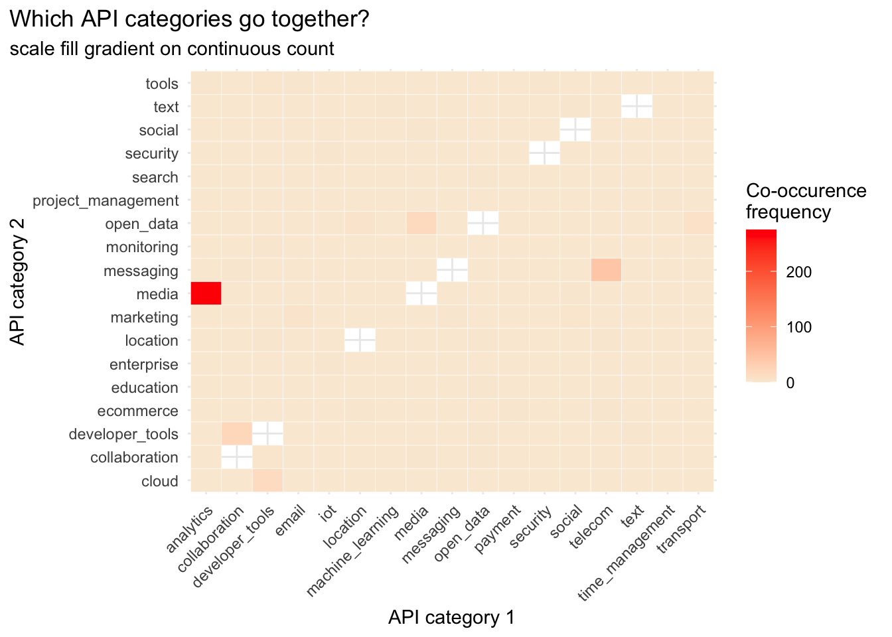
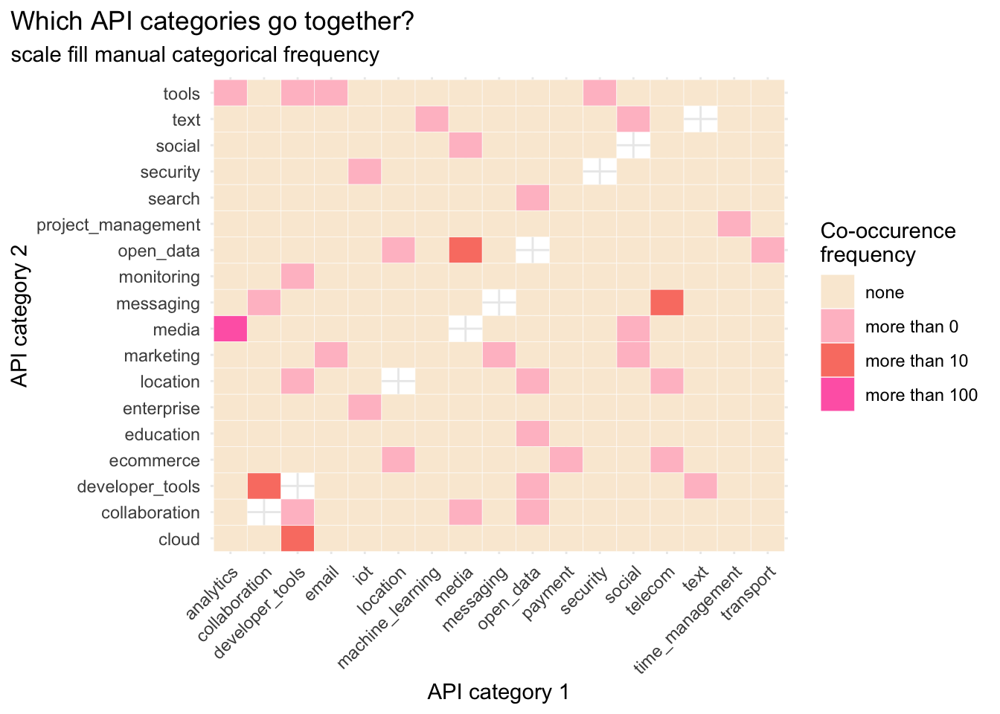

library(tidyverse)
library(tidytuesdayR)
library(janitor)
library(ggeasy)
library(gt)
# adjust year/week values here
year = 2025
week = 24apis
tidy tuesday week 25
The Tidy Tuesday data this week is about APIs. Jon Harmon is writing a book about using API (aka application programming interface) to access data and pulled information from apisguru.com into this dataset.
I was interested in the API categories. Most of the API names have 2 categories associated with them; which API categories tend to go together?
load packages
get the data
tt <- tt_load(year, week)---- Compiling #TidyTuesday Information for 2025-06-17 ----
--- There are 5 files available ---
── Downloading files ───────────────────────────────────────────────────────────
1 of 5: "api_categories.csv"
2 of 5: "api_info.csv"
3 of 5: "api_logos.csv"
4 of 5: "api_origins.csv"
5 of 5: "apisguru_apis.csv"cat <- tt[[1]]
rm(tt)wrangling
First I was interested in the unique values in the category variable. Not sure what is going on with those 1 letter categories that spell security??
cat %>%
distinct(apisguru_category) %>%
gt()| apisguru_category |
|---|
| financial |
| security |
| cloud |
| location |
| iot |
| marketing |
| payment |
| ecommerce |
| machine_learning |
| developer_tools |
| transport |
| enterprise |
| open_data |
| messaging |
| time_management |
| project_management |
| media |
| tools |
| search |
| collaboration |
| social |
| entertainment |
| analytics |
| telecom |
| text |
| education |
| backend |
| hosting |
| customer_relation |
| storage |
| monitoring |
| forms |
| support |
| s |
| e |
| c |
| u |
| r |
| i |
| t |
| y |
In the category dataframe, each category associated with an API is represented in a separate row. I am interested in how many catgories each API name is associated with so us the get_dupes() function from janitor to look for duplicate name values.
There is one API that has 8! categories; threatjammer.com is the API that made up its own categories that spell security… why? who knows??
Using tabyl() to count how many duplicate names there are shows us that most API names are associated with 2 categories. I am interested in which categories tend to co-occur.
dups <- cat %>%
get_dupes(name)
dups %>%
filter(dupe_count == 8) %>%
gt()| name | dupe_count | apisguru_category |
|---|---|---|
| threatjammer.com | 8 | s |
| threatjammer.com | 8 | e |
| threatjammer.com | 8 | c |
| threatjammer.com | 8 | u |
| threatjammer.com | 8 | r |
| threatjammer.com | 8 | i |
| threatjammer.com | 8 | t |
| threatjammer.com | 8 | y |
dups %>%
tabyl(dupe_count) dupe_count n percent
2 834 0.960829493
3 21 0.024193548
5 5 0.005760369
8 8 0.009216590Here I am filtering for just those APIs that are associated with 2 categories and grouping by name before making a new column that captures the category number to make the next pivot step easier.
Once the categories are wide, I can use tabyl to count the instances of co-occurence, then use pivot_longer to get the counts back into a format that ggplot will like. I also create a variable that filters out instances where category 1 and 2 are the same and adds a categorical variable to use in colouring my heat map.
# filter for 2 categories, add category count variable
dups2 <- dups %>%
filter(dupe_count == 2) %>%
select(name, category = apisguru_category) %>%
group_by(name) %>%
mutate(category_num = paste0("category", row_number()))
# make category count wide
dups2_wide <- dups2 %>%
pivot_wider(names_from = category_num,
values_from = category)
# count instances of cooccurence
co <- dups2_wide %>%
tabyl(category1, category2)
# make counts long again
co_long <- co %>%
pivot_longer(names_to = "category2", values_to = "count", cloud:tools) %>%
arrange(-count) %>%
mutate(match = case_when(category1 == category2 ~ "TRUE", category1 != category2 ~ "FALSE")) %>%
filter(match == FALSE) %>%
mutate(freq = case_when(count > 100 ~ "more than 100",
count > 10 ~ "more than 10",
count > 0 ~ "more than 0",
count == 0 ~ "none"))plot
I went back and forth re whether to plot continuous count values or categorial frequency values. I am not sure either is particularly meaningful, but I like the look of the frequency plot better.
co_long$freq <- fct_relevel(co_long$freq, c("none", "more than 0", "more than 10", "more than 100"))
levels(co_long$freq )[1] "none" "more than 0" "more than 10" "more than 100"colours <- c("antiquewhite", "pink", "salmon", "hotpink")
co_long %>%
ggplot(aes(x = category1, y = category2, fill = count)) +
geom_tile(color = "white") +
scale_fill_gradient(low = "antiquewhite", high = "red", na.value = NA) +
labs(title = "Which API categories go together?",
subtitle = "scale fill gradient on continuous count",
x = "API category 1",
y = "API category 2",
fill = "Co-occurence \nfrequency") +
theme_minimal() +
theme(axis.text.x = element_text(angle = 45, hjust = 1),
plot.title.position = "plot")
co_long %>%
ggplot(aes(x = category1, y = category2, fill = freq)) +
geom_tile(color = "white") +
scale_fill_manual(values = colours) +
labs(title = "Which API categories go together?",
subtitle = "scale fill manual categorical frequency",
x = "API category 1",
y = "API category 2",
fill = "Co-occurence \nfrequency") +
theme_minimal() +
theme(axis.text.x = element_text(angle = 45, hjust = 1),
plot.title.position = "plot")
Take home: media and analytics categories appear together the most (275 apis)